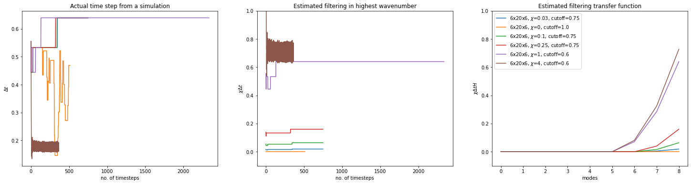
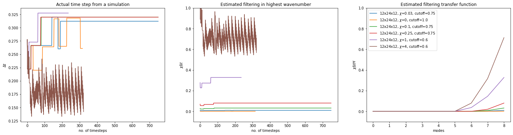
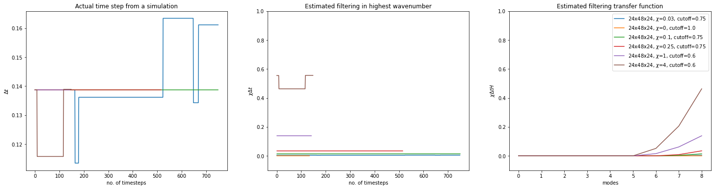

HPFRT filtering
For a model evolution equation:
$$ \partial_t u + F(u) = 0 $$
The filtering is equivalent to adding a dissipative term operating following a high-pass filter. This is otherwise termed as a relaxation term:
$$ \partial_t u + F(u) = -\chi H(u) $$
The high pass filter function $H$ is a function operates in the spectral / modal space ($\phi(k)$) containing $N$ modes:
$$H(u_N(x)) = \Sigma_k h(k) a(k) \phi(k, x)$$
where $h(k)$ is described as:
$$ h(k) = \left{ \begin{array}{ll} \left( \frac{k-k_c}{N-k_c} \right)^2, & k \gt k_c\ 0,& k \leq k_c \ \end{array} \right. $$
Implementation in Nek5000
The relevant lines of code are:
In
core/reader_par.f
call finiparser_getDbl(d_out,'general:filterWeight',ifnd)
if (ifnd .eq. 1) then
param(103) = d_out
...
call finiparser_getDbl(d_out,'general:filterCutoffRatio',ifnd)
if (ifnd .eq. 1) then
dtmp = anint(lx1*(1.0 - d_out))
param(101) = max(dtmp-1,0.0)
...
In
core/hpf.f
hpf_kut = int(param(101))+1
hpf_chi = -1.0*abs(param(103))
...
call ident (diag,nx)
nx = lx1
...
kut = hpf_kut
k0 = nx-kut
do k=k0+1,nx
kk = k+nx*(k-1)
amp = ((k-k0)*(k-k0)+0.)/(kut*kut+0.) ! Normalized amplitude. quadratic growth
diag(kk) = 1.-amp
enddo
The transfer function
import numpy as np
def transfer_function(order, cutoff):
# order = nx = lx1
k = np.arange(0., order + 1)
diag = np.ones_like(k)
dtmp = np.round(order * (1 - cutoff))
# no. of filtered wavenumber modes
param_101 = max(dtmp - 1, 0.)
# print("dtmp, param(101):", dtmp, param_101)
kut = int(param_101) + 1
k0 = order - kut # cutoff wavenumber
cond = k > k0
amp = (k - k0)**2 / kut**2
diag[cond] = 1. - amp[cond]
return 1 - diag
def weighted_transfer_function(order, cutoff, weight, dt):
# param_103 = weight
transf = transfer_function(order, cutoff)
return weight * dt * transf
order = 8
transfer_function(order, cutoff=0.75)
array([0. , 0. , 0. , 0. , 0. , 0. , 0. , 0.25, 1. ])
weighted_transfer_function(order, cutoff=0.75, weight=0.25, dt=1)
array([0. , 0. , 0. , 0. , 0. , 0. , 0. , 0.0625,
0.25 ])
Effects of filtering parameters
from pathlib import Path
import matplotlib.pyplot as plt
import numpy as np
from eturb.output.print_stdout import PrintStdOut
for w in range(1, 4):
name = f"run_w{w}*.log"
fig, axes = plt.subplots(1, 3, figsize=(25, 6))
ax1, ax2, ax3 = axes.ravel()
for file in sorted(Path.cwd().glob(name)):
stdout = PrintStdOut(file=file)
# print(stdout.path_run)
params = stdout.params
fw = params.nek.general.filter_weight
fc = params.nek.general.filter_cutoff_ratio
# print(fw, fc)
label=rf"{params.oper.nx}x{params.oper.ny}x{params.oper.nz}, $\chi$={fw}, cutoff={fc}"
#if fw > 1:
# continue
dt_median = np.median(stdout.dt)
w_transf = weighted_transfer_function(params.oper.elem.order, fc, fw, dt_median)
ax1.plot(stdout.dt, label=label)
# ax1.hlines(dt_median, 0, 500)
ax2.plot(stdout.dt * fw, label=label)
ax3.plot(w_transf, label=label)
ax1.set_ylabel(r"$\Delta t$")
ax1.set_xlabel("no. of timesteps")
ax2.set_ylabel(r"$\chi \Delta t$")
ax2.set_xlabel("no. of timesteps")
ax3.set_ylabel(r"$\chi \Delta t H$")
ax3.set_xlabel("modes")
ax1.set_title("Actual time step from a simulation")
ax2.set_title("Estimated filtering in highest wavenumber")
ax3.set_title("Estimated filtering transfer function")
#ax1.legend()
#ax2.legend()
ax3.legend()
ax2.set_ylim(-0.1, 1.)
ax3.set_ylim(-0.1, 1.)
fig.show()



stdout.file